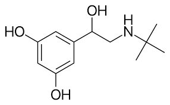
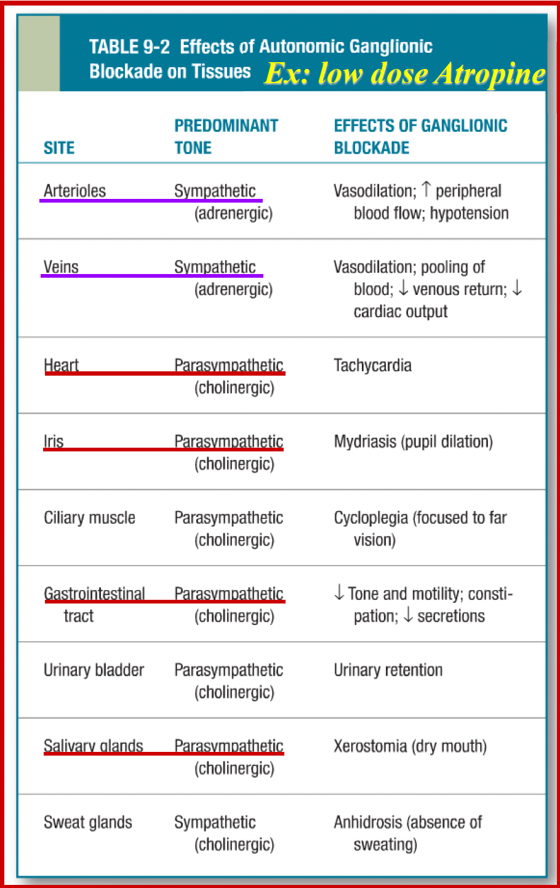

腎上腺素
| 種類 | 位置 | G protein | effect |
|---|---|---|---|
| α1 (＋) | 升血壓: 收縮小動脈平滑肌 | Gq | IP3、DAG↑ → Ca2+↑ |
| 升血糖：胰島素↓, 肝臟糖解 | |||
| 散瞳: 收縮虹膜放射肌 | |||
| 收縮胃腸道括約肌、膀胱平滑肌(憋尿)、毛囊平滑肌 | |||
| 減少鼻黏液 | |||
| α2 (-) | 突觸前：NE釋放↓ → 交感↓ → 降血壓 | Gi | adenyl cyclase↓ → cAMP↓ |
| 突觸後：血管收縮 | |||
| 中樞血管：舒張、減少交感活性 | |||
| 平滑肌舒張 | |||
| 射精(ejaculation) | |||
| 抑制 lipolysis | |||
| 眼內壓 ↓ | |||
| β1 (+) | SA node↑ → 心跳、收縮力↑ | Gs | adenyl cyclase↑ → cAMP↑ |
| β2 (+/-) | 降血壓: 擴張血管平滑肌 | ||
| 升血糖: 昇糖素↑ | |||
| 擴張支氣管平滑肌、子宮平滑肌(安胎) | |||
| 收縮腸壁、胃壁平滑肌 | |||
| 活化心臟 Gi | |||
| β3 (+) | 利尿:膀胱逼尿肌(detrusor muscle)放鬆 | ||
| 活化lipolysis | |||
| D1 (+) | 腎臟血管平滑肌舒張 | ||
| D2 (-) | Gi | adenyl cyclase↓ → cAMP↓ | |
agonists
N 電子雲越厚，越偏 β2
NE → Epinephrine → Isoproterenol → Terbutaline
α2 N 接拉電子基
?line
| 受體 | effect | ||
|---|---|---|---|
Epinephrine  |
α, β | 直接 | 口服無效 |
Norepinephrine (NE)  |
α, β1 | 增加迷走神經活性 | |
Phenylephrine  |
α1 | 散瞳劑(mydriatic)、 去鼻充血劑(decongestant)、提高血壓 | |
Midodrine  |
姿勢性低血壓 | ||
Prodrug,  |
|||
| methyldopa | α2 | - | - |
| guanfacine | |||
| guanabenz | |||
| Clonidine | 直接 | 高血壓、鎮定 可樂定 | |
Tizanidine  |
肌肉鬆弛劑 | ||
Brimonidine  |
青光眼 | ||
| Dexmedetomidine | 鎮定(sedative) | ||
| Oxymetazoline | 去鼻充血劑(decongestant) | ||
Isoproterenol  |
β | 直接 | 降血壓藥 |
| Terbutaline  | β2 | 氣喘 | |
| Dobutamine (+) | β1, α1↓ | 強心劑 | |
| Dobutamine (-) | α1 | ||
| -terol | β2 | ||
| Ritodrine | 安胎 | ||
Ephedrine (麻黃素)  |
β | mix | 氣喘 |
| Pseudoephedrine | ? | 去鼻充血劑(decongestant) | |
| Amphetamine-Like: Modafinil, Armodafinil, Tyramine |
競爭 NE 回收 (NET) | ||
| NE 釋放↑ | |||
| Catecholamine Reuptake Inhibitor: Cocaine, Atomoxetine, Reboxetine |
NET↓ | ||
Antagonist
默認直接作用，搶受體

| 受體 | r/ir | effect | |
|---|---|---|---|
Phentolamine  |
α | ir (24h) | 治療 pheochromocytoma (嗜鉻細胞瘤) 造成的高血壓。 阻斷α2 receptor，造成 tachycardia(心跳過速), cardiac arrhinias (心臟驟停) 有個性的糞系辦 |
Phenoxybenzamine  |
r (4h) | ||
| Prazosin | α1 | R | 治療慢性高血壓 |
| Prazosin, Terazosin, Doxazosin |
|
||
| Indoramin | - | ||
| Urapidil u rapid |
|||
| Yohimbine yohi~ |
α2 | - |
|
| Esmolol | β1 | - | 藥效極短 |
| Betaxolol | 青光眼 | ||
| metoprolol | - | ||
| Nadolol | β | 24h | |
| Propranolol | 口服可用率低，可穿BBB | ||
| Timolol | 青光眼 | ||
| Labetalol 來逼他 |
α, β | 治高血壓, Congestive Heart Failure (CHF) | |
| Carvedilol, medroxalol, bucindolol | |||
Cholinergic Drugs
效果
- 同時干擾正副交感，主宰的被影響
- 除了血管，正常都是交感主宰
低劑量，非選擇 (low dose Atropine)


機制
| 階段 | 蛋白 | 功能 |
|---|---|---|
| 合成 | CHT | 將Choline傳輸到細胞內 (Choline和Na+的同向運輸) |
| 儲存 | VAT | 將合成的ACh傳輸到突觸小泡中 (ACh和H+的反向運輸) |
| 釋放 | SNARE | 介導突觸小泡與細胞膜融合釋出ACh |
Receptor

藥物
Direct agonist
類似物
- 帶正電，過不了 BBB
- 分解快
Alkaloids (生物鹼類)
- 帶正電，無法穿越BBB
- 腸胃吸收差、BA(bioavailability)低。
Muscarine

Pilocarpine

Indirect agonist (AChE inhibitors)
ostigmine

- Simple alcohols
- Reversible(可逆)、作用時間短(藥效僅5-15分鐘)
- Carbamic acid esters (胺甲酸酯類)
- Reversible(可逆)、作用時間介於另兩類之間(藥效0.5-6小時)
- Organophosphates (有機磷)
- Irreversible(不可逆)、作用時間長(藥效超過100小時)、生化武器
Local Anesthetics
- 沒有選擇性
- 阻斷鈉離子通道(voltage-gated sodium ion channel)以終止痛覺傳遞
- TAC(Tetracaine+Adrenaline+Cocaine)
| effect | 排出 | |||
|---|---|---|---|---|
| Ester-linked | mins-1h | 血漿中esterase (Pseudocholinesterase) → 腎 | ||
Procaine  |
快 | 短 | 浸潤 | 降低 Sulfonamide(磺胺類抗生素)的抗菌作用。 |
Tetracaine  |
慢 | 長 | 塗抹/脊椎 | 會造成血管舒張 |
Cocaine  |
快 | 中 | all | 強烈的血管收縮 |
| Amide-linked | 1-2h | 肝臟P450 →腎臟 | ||
Lidocane  |
快 | 中 | all | 最常用的局部麻醉，Epinephrine合併使用可延長作用時間、提升藥效 |
| Prilocaine | 少用，不須併用血管收縮劑 | |||
| Bupivacaine | - | 長 | 浸潤/ 硬膜下腔/ 脊髓 | 不影響運動 |
Articaine  |
快 | 短 | 浸潤 | 取代 Procaine ，牙科 |
GABA 促進

-
Benzodiazepine(BZD)
-
Z-drug
-
BZ1 (睡眠、焦慮)
- Quazepam
- Zolpidem
- Zaleplon
-
抗癲癇(Anticonvulsant)
- Diazepam
- Midazolam
- Lorazepam
- Clonazepam
大鐘樓空
鎮痛劑（analgesics）
NSAID
- 肝代謝、與albumin 結合
- 抑制COX1(constitutive)：
- 胃酸↑ (GI effects)
- 抑制血小板
- 鈉滯留、腎功能↓：老人、體液過少者容易(Sulindac、Nabumetone 無活性腎排出，影響小)
- 抑制COX2(inducible)：
- 消炎止痛 (抑制PGE2所釋放 Bradykinin & Histamine)
- 促進血小板
- 共同副作用：促進Lipooxygenase → LTC4等增加→支氣管收縮
| cox | 備註 | ||
|---|---|---|---|
| Salicylic acid | Aspirin | 1>2 | |
| Diflunisal | 1,2 | ||
| Ticagrelor | 1,2 | ||
| Celecoxib | 2 沒奈心(Me lo xi)清理(cele)一坨(eto)，挑著清 |
||
| Etodolac | |||
| Meloxicam | |||
| Acetate | Diclofenac 豬哥 | 1,2 | 肝毒性 |
| Indomethacin | 腎毒性最大、治(關閉)PDA | ||
| Nabumetone | |||
| Sulindac | |||
| Tolmetin 痛沒停 | 無法治痛風 | ||
| Ketorolac | 嚴重腸胃副作用 | ||
| Propionate 丙 → 3 → 解熱 | Ibuprofen 嬰不破費 | 1,2 | 常見。關閉早產兒 PDA |
| Ketoprofen | |||
| Naproxen nap | somnolence(嗜睡 ) | ||
| Oxaprozin | 長效 POX | ||
| Piroxicam | |||
| 非 NASID | Acetaminophen | COX 影響小，作用於CNS，長期大量使用具肝毒性。 | |
- PDA
- 開放動脈導管 (patent ductus rteriosus)
DMARD
- Disease-modifying antirheumatic drugs
- RA 藥
抑制骨髓
- Azathioprine/AZA
csDMARDs
| 抑制B/T cell 皆抑制骨髓 | Azathioprine | 口服佳 |
| Mycophenolate mofetil (MMF) | 抑制IMP變為GMP | |
| Cyclophosphamide | 烷化DNA | |
| Leflunomide, Teriflunomide | - | |
biologic(生物製劑)
- Cyclosporine、Tacrolimus
| Anti | - | - |
|---|---|---|
| T-cell-modulating biologic | Abatacept | - |
| B-cell cytotoxic | Belimumab, Rituximab(RTX) | RTX 若比鄰 |
| TNF-α | Infliximab, Adalimumab, Golimumab, Etanercept, Certolizumab | T 應付(inf)阿達(ada) Intern (etan)舌頭(certo)夠力(goli) |
| IL-1 | Anakinra, Canakinumab, Rilonacept | 1 號 ana 硬拉(inra), canal, rhino (rilo) 要12歲 |
| IL-6 | Sarilumab, Tocilizumab | 莎莉拖戲 |
| IL-17 | Secukinumab, Ixekizumab, Brodalumab | Broda 一起去(17,I xe ki) 洗身體(Secu) |
tsDMARDs
- targeted synthetic(標靶藥物)。
靶心(Barci)JK 頭髮(Tofa)
- Tofacitinib
- 抑制所有的 Janus kinase/JAK family
- 適應症: 發炎性腸道疾病
- 副作用: 上呼吸道感染 、泌
- Barcitinib
- 抑制 JAK1、JAK2＞JAK3
- 適應症: RA
- 副作用:感染, Herpes virus(泡疹病毒)復發
endogenous opioid peptide (內生鴉片)
| Receptor subunit | 最佳親和 |
|---|---|
| μ | Endorphins |
| δ | Enkephalins |
| κ | Dynorphins |
- NMDA Receptor
- 放大器 → 鴉片類耐受性
-
治療腹瀉(不易進中樞) 落魄大夫治腹瀉
- Diphenoxylate (因)
- Difenoxin (不可用於腸侵入性細菌造成之腹瀉)
- Loperamide
-
替代治療
- 鴉片類的 methadone，buprenorphine 不會懦夫，沒啥痛
- 非鴉片類的 clonidine 可樂定
DM
- Insulin
- Secretagogues：胰島素促泌劑，因此對第一型糖尿病沒效。
- Sulfonylureas
- Meglitinides
- Sensitizers：胰島素增敏劑
- Biguanides：Metformin
- Thiazolidinediones(TZD)
- Alpha-glucosidase inhibitors：抑制碳水化合物分解，延長血糖上升時間。
- Incretin mimetics：新藥物，能跟腸泌素一樣具有促進Insulin分泌的功能。
- Glucagon-like peptide(GLP) analogs and agonists
- Gastric inhibitory peptide(GIP) analogs
- DPP-4 inhibitors：Incretin易被DPP-4分解掉，故抑制此酵素能延長作用時間。
- Sodium-glucose cotransporter 2 inhibitors：抑制腎臟對糖類的再吸收，增加糖排出
gli 在前 → 飯前吃 → 促泌
amylin 類似物
- 降血糖
- 降食慾

Insulin Preparations 胰島素製劑

促泌劑
作用在K+ channel，使K+ channel關閉，促進胰島素分泌
| 作用 | ||
|---|---|---|
| Sulfonylureas gli在前面，飯前 | Tolbutamide, Chlorpropamide, Tolazamide, Acetohexamide (臨床無使用) | hypoglycemia |
| Glyburide | 腎、糞排除 sul fo | |
| Glipizide | ||
| Gliclazide (臨床無使用) | ||
| Glimepiride | ||
| Meglitinides gli在後面，飯後 | Repaglinide | |
| Nateglinide | ||
增敏劑
| Biguanides | Metformin mate for me |
乳酸中毒 (禁忌：心肝腎不佳) 抑制糖質新生 Type 2 DM 的第一線用藥 |
| Thiazolidinediones (TZD) 蛤蜊太熟 |
Troglitazone | PPARγ→↑GLUT-4 肝毒性 Pioglitazone：TG↓, HDL↑ Rosiglitazone：總膽固醇↑, HDL↑, LDL↑ |
| Rosiglitazone | ||
氣喘/COPD藥
- Corticosteroid
- HAT (histone acetyltransferase) ↓
- HDAV ↑
- Theophyline
- IL10 release
- HDAV ↑
- Adenosine R ↓

期末
| 類別 | ||
|---|---|---|
| IA | Quinidine | 延長再極化期 |
| Procainamide | IA III Ach agonist |
|
| IB | Lidocaine, Mexiletine, Phenytoin | 縮短再極化期, 毛地黃解毒劑,治療 TdP |
| IC | - | CNS effect |
| II | -olol | β1 blocker |
| III | Sotalol, Ibutilide, Dofetilide | 造成TdP |
| I-IV | Amiodarone | |
-
腎毒
- Cisplatin
- Methotrexate
- Cephalosporins
- FQs
- moxifloxacin 例外
- Glycopeptides
- Viomycin
- Teicoplanin
- Bacitracin
- Capreomycin
- aminoglycosides
- Streptomycin
- Gentamicin
- Rifamycins
- Amphotericin B
- Allylamines
- Fluconazole
- Cidofovir
- Foscarnet
-
骨髓抑制
- ganciclovir
- valgamciclovir
- Methotrexate
- Chloramphenicol
-
digitalis
- 效果:鈉鉀幫補↓→鈉鈣幫浦排鈉留鈣 → 強心
- 風險:低血鉀(細胞鉀不足)、低血鎂(Ca2+ 湧入)、細胞外高血鈣
- 副作用: 心搏過速、顫動型心律不整(即Tdp)
- 解毒: atropine, IB, AB
-
鼻炎預防
- Corticosteroids
- Cromolyn
-
Anti-leukotrienes
- Zileuton
- Zileuton
-
RAAS Inhibitor
- Direct renin inhibitor(DRI)
- Aliskiren
- ACEI
- enalapril
- lisinopril
- Angiotensin II-receptor blocker(ARB)
- Side: Fetotoxic
- Valsartan
- aldosterone
- Direct renin inhibitor(DRI)
-
Calcium-channel blockers(CCBs)
Lipid-lowering
- statin
- HMG-CoA Reductase inhibitor
- CEPT inhibitor → 升 HDL
- 降 LDL
- 長效: Atorvastatin, Rosuvastatin
- DM: Pitavastatin
- Ezetimib
- NPC1L1 inhibitor
- 抑制小腸對於dietary和biliary cholesterol的再吸收
- fibrates
- PPARs-α
- 增加 ApoA-Ⅰ, Ⅱ → HDL
- 形成膽結石(gallstones)
- Niacin
- apoA-I

內碼
1176565573